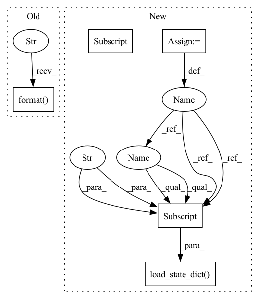

Pattern ID :1164
Before Change
print("Test on target domain:")
_, test_mAP = validate(test_loader, model_1_ema, target_dataset.query, target_dataset.gallery, device,
cmc_flag=True, rerank=args.rerank)
print("test mAP on target = {}".format( test_mAP) )
print("oracle mAP on target = {}".format(best_test_mAP))
logger.close()
After Change
// optionally resume from a checkpoint
if args.resume:
checkpoint = torch.load(args.resume, map_location="cpu")
model_1.load_state_dict(checkpoint["model_1"])
model_1_ema.load_state_dict(checkpoint["model_1_ema"] )
model_2.load_state_dict(checkpoint["model_2"])
model_2_ema.load_state_dict(checkpoint["model_2_ema"])
args.start_epoch = checkpoint["epoch"] + 1
In pattern: SUPERPATTERN
Frequency: 3
Non-data size: 5
Instances Fragment ID: 5856297
Project Name: thuml/transfer-learning-library
Commit Name: 91cc646b6e3c004ef8e2aba07ee26ef7b652116f
Time: 2021-09-03
Author: chenbx18@mails.tsinghua.edu.cn
File Name: examples/domain_adaptation/reid/mmt.py
M Class Name: AnonimousClass
N Class Name: AnonimousClass
M Method Name: main(1)
N Method Name: main(1)
M Parent Class:
N Parent Class:
M File Name: examples/domain_adaptation/reid/mmt.py
N File Name: examples/domain_adaptation/reid/mmt.py
M Start Line: 39
M End Line: 164
N Start Line: 120
N End Line: 173
Before Change
_, test_mAP = validate(test_loader, model_1_ema, target_dataset.query, target_dataset.gallery, device,
cmc_flag=True, rerank=args.rerank)
print("test mAP on target = {}".format(test_mAP))
print("oracle mAP on target = {}".format( best_test_mAP) )
logger.close()
After Change
// optionally resume from a checkpoint
if args.resume:
checkpoint = torch.load(args.resume, map_location="cpu")
model_1.load_state_dict(checkpoint["model_1"] )
model_1_ema.load_state_dict(checkpoint["model_1_ema"])
model_2.load_state_dict(checkpoint["model_2"])
model_2_ema.load_state_dict(checkpoint["model_2_ema"])
args.start_epoch = checkpoint["epoch"] + 1 Fragment ID: 5856296
Project Name: thuml/transfer-learning-library
Commit Name: 91cc646b6e3c004ef8e2aba07ee26ef7b652116f
Time: 2021-09-03
Author: chenbx18@mails.tsinghua.edu.cn
File Name: examples/domain_adaptation/reid/mmt.py
M Class Name: AnonimousClass
N Class Name: AnonimousClass
M Method Name: main(1)
N Method Name: main(1)
M Parent Class:
N Parent Class:
M File Name: examples/domain_adaptation/reid/mmt.py
N File Name: examples/domain_adaptation/reid/mmt.py
M Start Line: 39
M End Line: 164
N Start Line: 120
N End Line: 173
Before Change
break
if not maybe_model.exists():
raise AssertionError("checkpoint at {} doesn"t include a model.pth file".format( ckpt_dir) )
code_subdirs = [str(x) for x in code_path.iterdir() if x.is_dir()]
sys.path = [str(code_path)] + code_subdirs + sys.pathAfter Change
trial = cast(PyTorchTrial, trial)
model = trial.build_model()
checkpoint = torch.load(ckpt_dir.joinpath("state_dict.pth"), map_location="cpu") // type: ignore
model.load_state_dict(checkpoint["model_state_dict"] )
return model
Fragment ID: 5856301
Project Name: determined-ai/determined
Commit Name: 47ec6cc32234d8e797d9ae3c23d70bfb6d3a64a9
Time: 2020-05-18
Author: sidney@determined.ai
File Name: common/determined_common/experimental/checkpoint/_torch.py
M Class Name: AnonimousClass
N Class Name: AnonimousClass
M Method Name: load_model(2)
N Method Name: load_model(1)
M Parent Class:
N Parent Class:
M File Name: common/determined_common/experimental/checkpoint/_torch.py
N File Name: common/determined_common/experimental/checkpoint/_torch.py
M Start Line: 10
M End Line: 28
N Start Line: 10
N End Line: 22
Before Change
print("Test on target domain:")
_, test_mAP = validate(test_loader, model, target_dataset.query, target_dataset.gallery, device,
cmc_flag=True, rerank=args.rerank)
print("test mAP on target = {}".format( test_mAP) )
logger.close()
After Change
// optionally resume from a checkpoint
if args.resume:
checkpoint = torch.load(args.resume, map_location="cpu")
model.load_state_dict(checkpoint["model"] )
args.start_epoch = checkpoint["epoch"] + 1
// start training
best_test_mAP = 0. Fragment ID: 5856302
Project Name: thuml/transfer-learning-library
Commit Name: 91cc646b6e3c004ef8e2aba07ee26ef7b652116f
Time: 2021-09-03
Author: chenbx18@mails.tsinghua.edu.cn
File Name: examples/domain_adaptation/reid/baseline_cluster.py
M Class Name: AnonimousClass
N Class Name: AnonimousClass
M Method Name: main(1)
N Method Name: main(1)
M Parent Class:
N Parent Class:
M File Name: examples/domain_adaptation/reid/baseline_cluster.py
N File Name: examples/domain_adaptation/reid/baseline_cluster.py
M Start Line: 37
M End Line: 156
N Start Line: 89
N End Line: 162